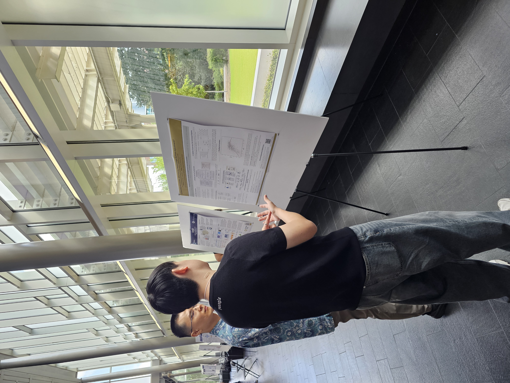
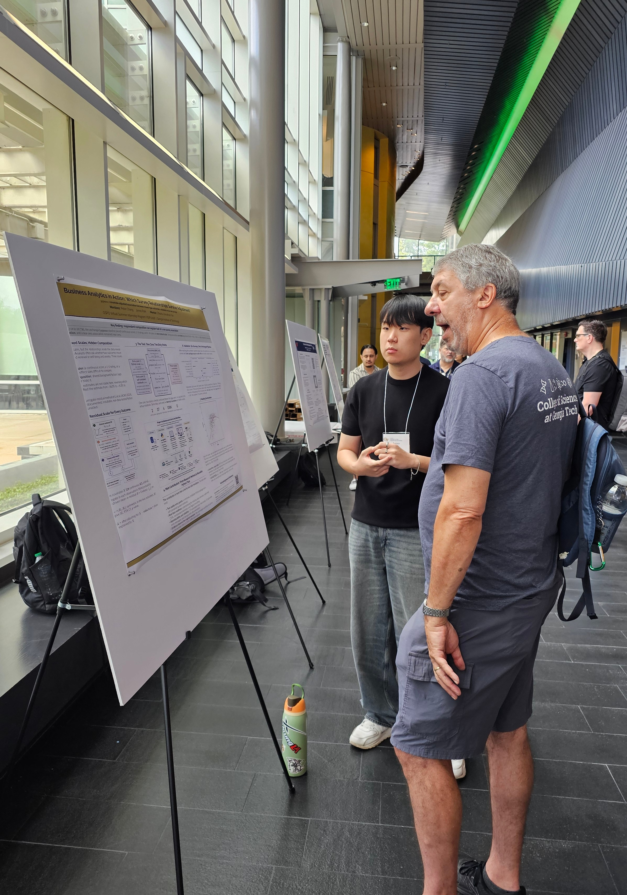
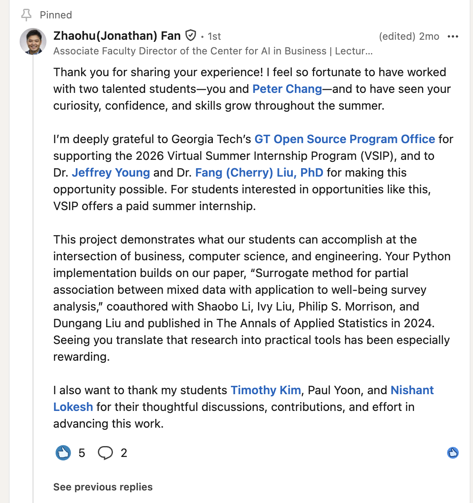

R-to-Python Translation
Contributed to translating statistical research methods from R into Python, supporting the implementation of surrogate residuals and covariate-adjusted association analysis.
PROFESSIONAL EXPERIENCE / OPEN SOURCE
Transforming published statistical research into accessible, reproducible Python tools through Georgia Tech's Open Source Program Office.
Business Analytics Intern
Georgia Tech OSPO
May – July 2026
Dr. Zhaohu (Jonathan) Fan
.jpg)
Real Survey Datasets
Passing Automated Tests
Largest Dataset
Software Entry Points
Collective project results from the 2026 Virtual Summer Internship Program.
01 / OVERVIEW
During the summer of 2026, I participated in Georgia Tech's Virtual Summer Internship Program (VSIP), supported by the Open Source Program Office.
Working alongside Peter Chang under the mentorship of Dr. Zhaohu (Jonathan) Fan, our project focused on translating an existing R-based statistical methodology into an accessible Python implementation.
The project builds upon the published paper Surrogate Method for Partial Association Between Mixed Data with Application to Well-Being Survey Analysis , published in The Annals of Applied Statistics in 2024.
PROJECT OBJECTIVE
02 / THE CHALLENGE
Survey datasets frequently contain a mixture of continuous scores, ordinal ratings, and categorical responses. Comparing relationships across these different measurement scales presents a statistical challenge.
Background characteristics such as age, gender, income, and political orientation can also influence observed relationships, making raw associations potentially misleading.
Our project addressed this challenge by implementing a surrogate-residual methodology that measures associations between mixed-type outcomes while adjusting for relevant covariates.
03 / MY CONTRIBUTIONS
My primary contribution focused on making the statistical methodology accessible through a self-contained, guided Jupyter notebook and supporting the Python implementation and validation process.
Contributed to translating statistical research methods from R into Python, supporting the implementation of surrogate residuals and covariate-adjusted association analysis.
Developed a self-contained Jupyter notebook that guides users through installation, data preparation, statistical analysis, and interpretation without requiring manual setup.
Supported validation of the Python workflow using real survey datasets, including ESM Teens and KLoSA, to evaluate reproducibility and consistency across different data structures.
Contributed to user-facing documentation and reproducible workflows, helping analysts understand the methodology, execute the software, and interpret statistical results.
04 / THE SOLUTION
Our team developed pypasso, a Python implementation of partial association analysis for mixed-type data.
The project provides two complementary ways to access the same statistical analysis pipeline.
A versioned, installable library designed for developers, researchers, and analysts who want to integrate the methodology into existing Python workflows.
A self-contained notebook that walks users through the complete analysis, from importing survey data to generating statistical results and visualizations.
CSV input
Clean and prepare
Surrogate residuals
Inference and plots
05 / RESULTS & IMPACT
The team validated the pypasso pipeline across six real-world survey datasets, ranging from approximately 1,100 to 108,000 observations.
The same analysis pipeline ran across all six surveys without changes to the package source code, demonstrating its adaptability to different datasets.
| Dataset | Sample Size | Raw | Adjusted |
|---|---|---|---|
| Swiss AV | 1.1K | 0.48 | 0.35 |
| Corona Health | 2.7K | -0.49 | -0.38 |
| KLoSA Aging | 6.1K | 0.20 | 0.10 |
| ESM Teens | 11K | -0.05 | -0.03 |
| TISP | 51K | 0.14 | 0.07 |
| COVIDiSTRESS | 108K | -0.03 | -0.02 |
Marginal and partial associations reported in the team's VSIP 2026 research poster. Association values are rounded.
In one survey, adjustment for respondent composition accounted for approximately 52% of the observed association.
This demonstrates why analysts should examine adjusted relationships rather than relying solely on raw correlations.
06 / RESEARCH PRESENTATION
Our project culminated in a research poster presentation titled Business Analytics in Action: Which Survey Relationships Survive Adjustment?
I presented the project's methodology, software architecture, and validation results, discussing how statistical research can be transformed into practical analytical tools.
View the complete research poster
.jpg)


07 / FACULTY RECOGNITION
I feel so fortunate to have worked with two talented students—you and Peter Chang—and to have seen your curiosity, confidence, and skills grow throughout the summer.
This project demonstrates what our students can accomplish at the intersection of business, computer science, and engineering.
Seeing you translate that research into practical tools has been especially rewarding.

08 / REFLECTION
This internship strengthened my ability to bridge the gap between academic research and practical software development.
I gained hands-on experience translating statistical methods into Python, working with real-world datasets, developing reproducible workflows, and communicating technical findings to a broader audience.
Most importantly, the experience demonstrated how business analytics, computer science, and research can come together to create accessible tools that support better decision-making.
09 / RESOURCES
Explore our Python implementation, statistical methodology, documentation, and project source code.
↗ RESEARCH POSTERReview our research methodology, software architecture, and validation results across six real-world surveys.
↗ OFFICIAL WEBSITEExplore Georgia Tech's Open Source Program Office, research initiatives, and Virtual Summer Internship Program.
↗ GITHUB ORGANIZATIONDiscover open-source projects, software repositories, and development initiatives supported by Georgia Tech.
↗Li, S., Fan, Z., Liu, I., Morrison, P. S., & Liu, D. (2024). Surrogate method for partial association between mixed data with application to well-being survey analysis. The Annals of Applied Statistics, 18 (3), 2254–2276.